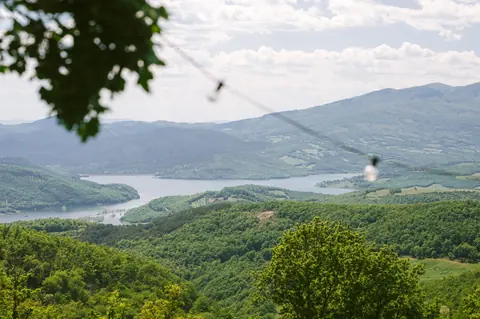

With a car
Head for Sansepolcro. Once you know your villa, use its map below and our final arrival instructions for the last few minutes.

28–31 May 2027 at La Conca, Sansepolcro
Our wedding is Saturday 29 May 2027. We’ve booked Villa Santarsa and Villa Vallorsaia for our wedding celebrations, from Friday 28 to Monday 31 May.

£150 per person for three nights, Friday to Monday. This covers your bed in one of the villas. We’re covering every meal from Friday night to Monday morning, every drink, and use of the pools and grounds.
Payment details appear in your saved reply once you’ve said you’re coming.
Compare the whole journey to Sansepolcro: flight times and prices, onward transport and the final trip to your villa. Check current flights and operator timetables for your dates. Tap an airport name to plan the drive.
Check-in and check-out times, which villa and room you’re in, the exact entrance and any shared transfers are still to be confirmed. The maps below are for planning only. The estate’s postal address may not take you to your villa’s entrance, so follow the final arrival instructions we’ll send before you travel.
Access needs: step-free routes, steps and suitable bathrooms still need to be checked. Please speak to us about access or transport needs before making arrangements.